ステンドグラス風 ペアフクロウ アクリルスタンド
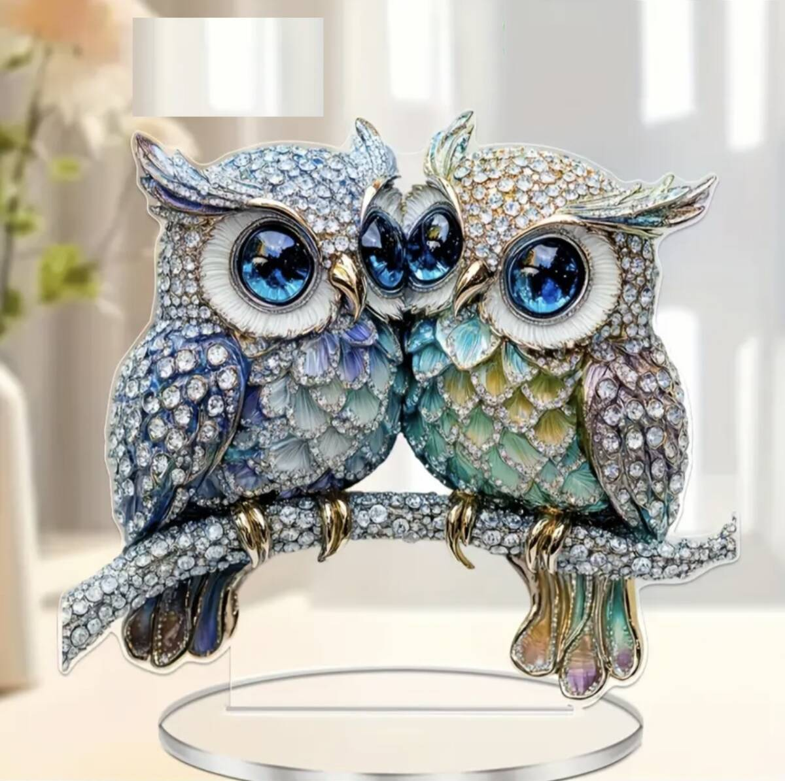
仕事、家のこと、子どものこと。
苦労は、できれば少ない方がいい。
昔から日本では、フクロウは
「苦労を遠ざける鳥」として
玄関や仕事場に飾られてきました。
さらに、首がぐるりと回ることから
「お金に困って首が回らなくなることがない」と
商売繁盛のお守りにも。
夜でも目が利く「森の賢者」は、
先を見通す知恵の象徴でもあります。
※いずれも古くからの言い伝え・語呂合わせです。
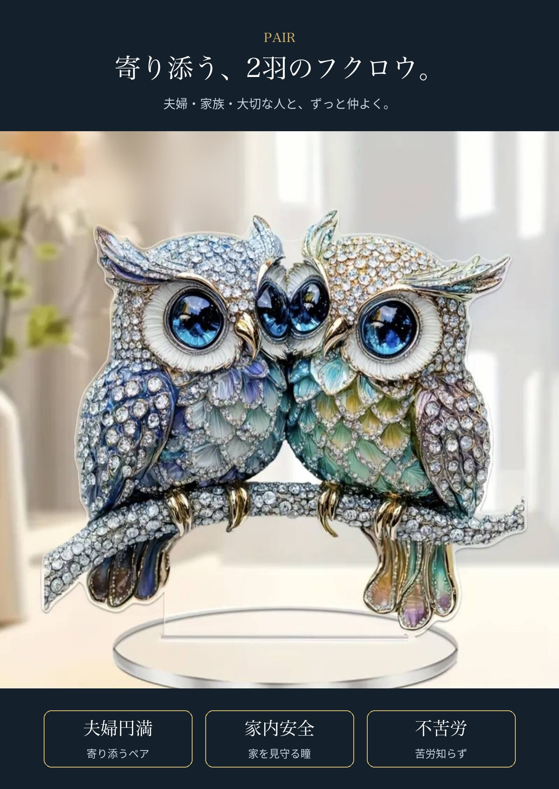
枝の上で、頬を寄せ合う2羽のフクロウ。
夫婦円満、家族の健康、大切な人とのご縁。
“ふたりで苦労知らず”の願いを、ひとつに。
深い青の瞳、ブルーからグリーンへ移ろう羽。
アクリル板に細かく描き込んでいるので、
平面なのに立体的に見えるのが特徴です。
光が当たる窓辺に置くと、透明の縁がきらりと光ります。
家の入口は運の入口。靴箱の上に、来客を迎える向きで。
テレビ台や棚の上に。家族円満のシンボルとして。
商売繁盛・学業成就のお守りに。幅18cmで場所を取りません。
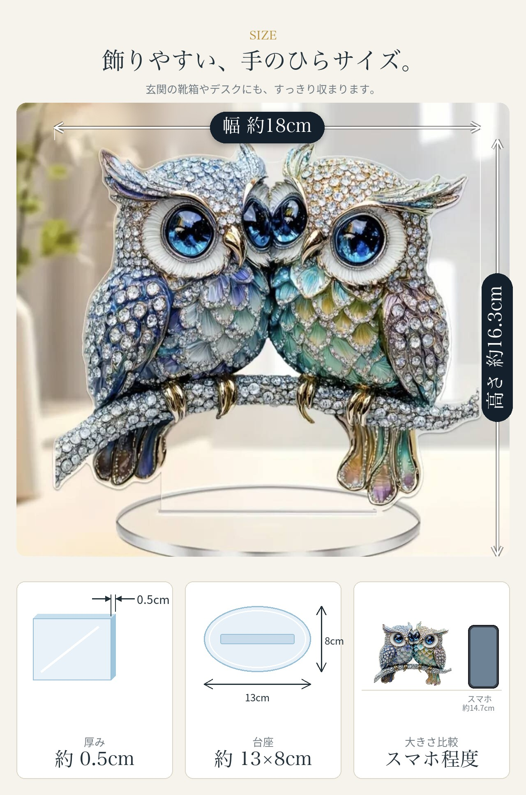
888円という縁起のよい“末広がり”の価格。
気軽に贈れて、意味まで伝わるプチギフトです。
| 商品名 | ステンドグラス風 ペアフクロウのプレート 台付き |
|---|---|
| サイズ | 約 幅18cm × 高さ16.3cm（台座含む） 厚み 約0.5cm／台座 約13cm × 8cm |
| 素材 | アクリル |
| 仕様 | 差し込み式の台座付き・防水仕様 |
| 発送 | 広島県より、ご注文から1〜2日で発送 |
| ご注意 | ガラス製・天然石ではなく、アクリル板への印刷です。 モニター環境により実物と色味が異なる場合がございます。 |
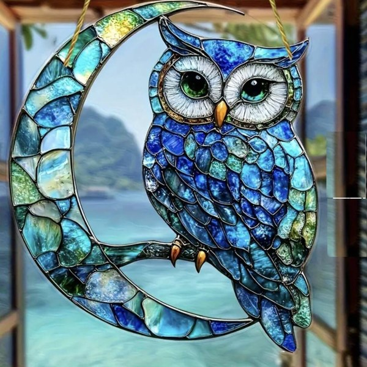
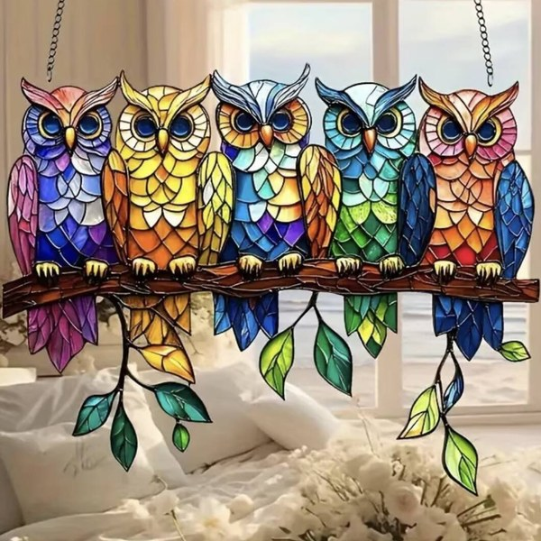
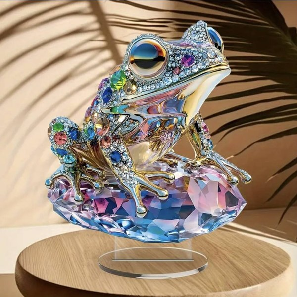
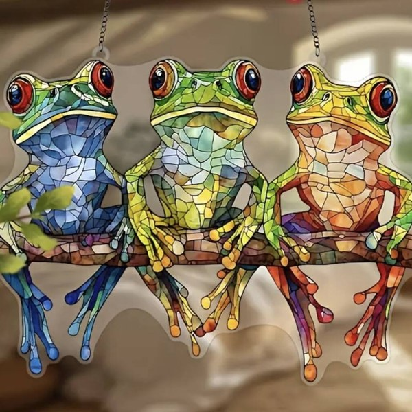
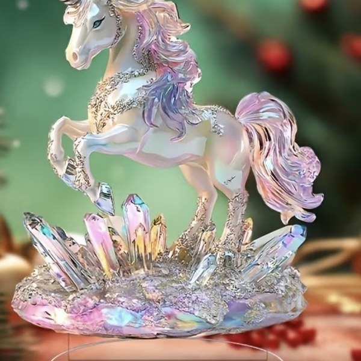
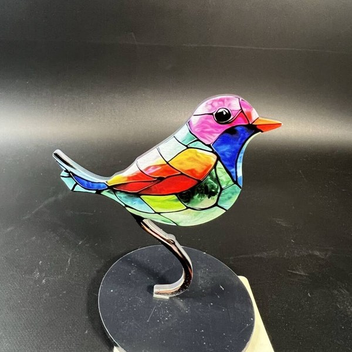
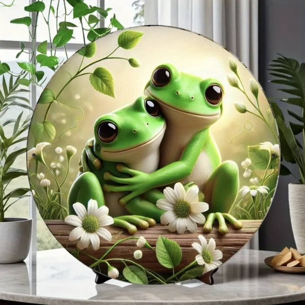
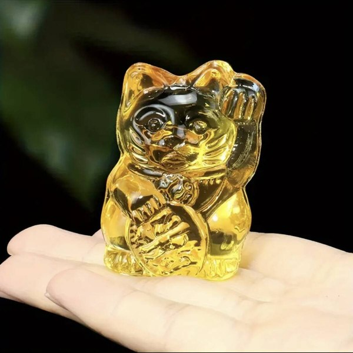